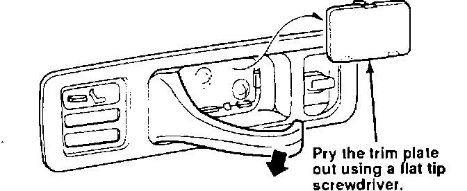
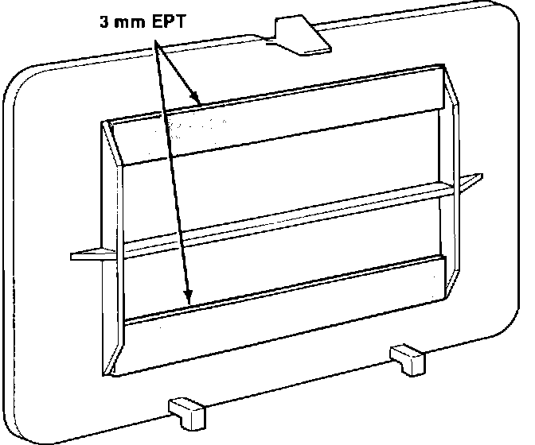

Door Handle Trim Plate Rattle
DOORSymptom:
Rattle from interior door handle trim plate.
Probable Cause:
The trim plate (cap) retaining clips are loose.
Affected Vehicles:
1991 Legend - All
1992 Legend - All
Corrective Action Insulate the area with 3 mm EPT Sealer.

1. Pry the trim plate out with a flat-tip screwdriver.

2. Cut 3 mm EPT Sealer into a strip 10 mm wide. Apply it to the back of the trim plate. The EPT will apply pressure to the retaining clips and eliminate the rattle.
WARRANTY INFORMATION:
Operation number: 818220
Flat rate time: 0.2 hours
Failed P/N: 72160-SP0-023ZA
Defect code: 043
Contention code: B07